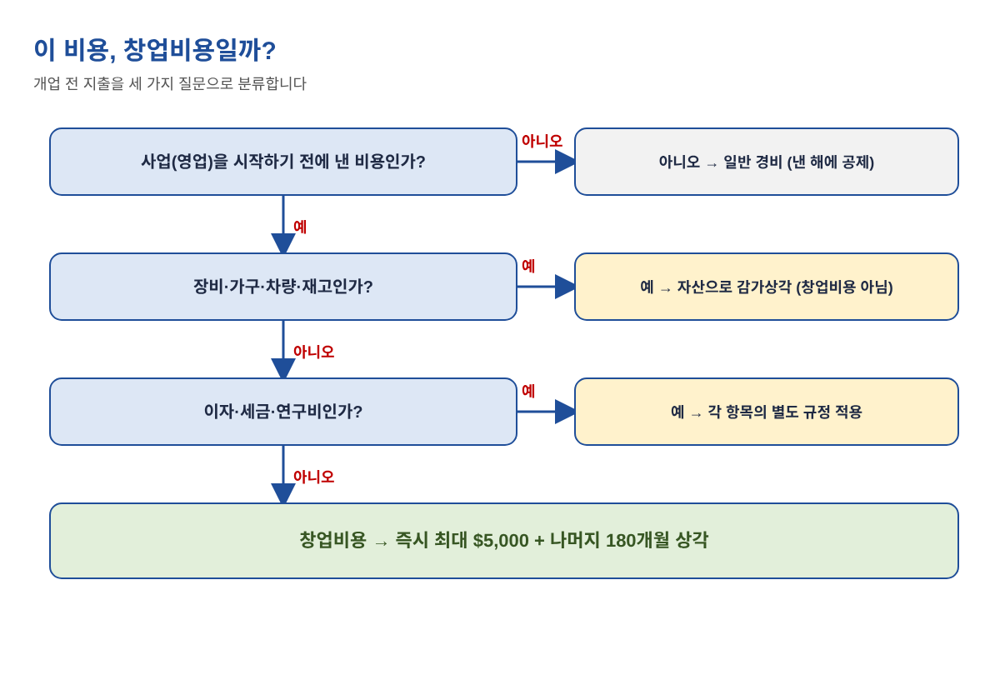
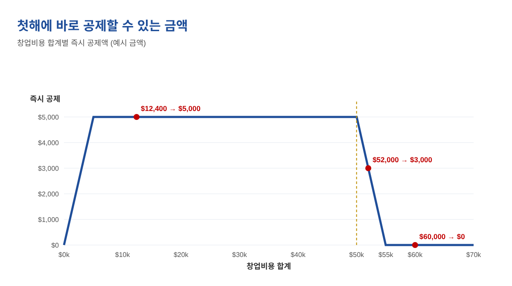
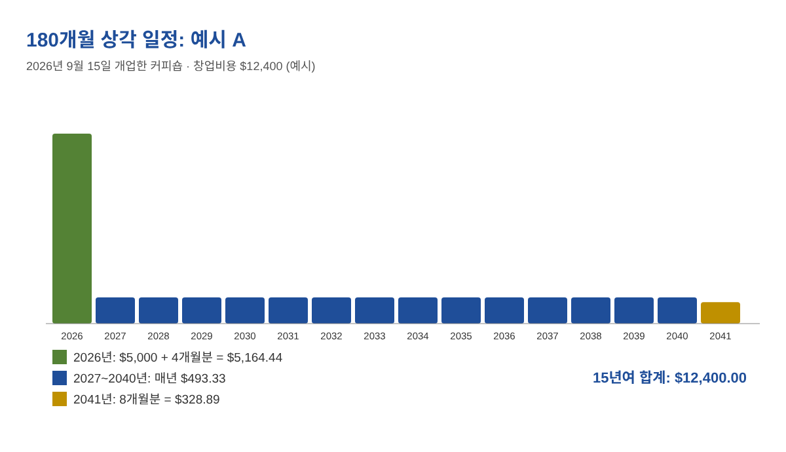

2026년에 개업하셨나요? 개업 전 쓴 창업비용 공제하는 법 ($5,000 규칙과 180개월 상각)
올해 가게나 회사를 여셨다면, 첫 손님을 받기 전부터 이미 돈이 꽤 나갔을 겁니다. 상권 조사, 컨설턴트 비용, 직원 교육 기간 급여, 개업 광고, 거래처를 찾으러 다닌 출장비 같은 것들입니다. 많은 분들이 이 비용을 그냥 일반 경비로 한꺼번에 처리하거나 아예 빠뜨리시는데, 둘 다 맞지 않습니다. 미국 연방 세법에서는 이런 비용 대부분을 창업비용(start-up costs)으로 보고 따로 정한 방식으로 공제합니다. 첫해에 최대 $5,000까지 바로 공제하고, 나머지는 180개월(15년)에 나누어 공제합니다.
이 글은 엑셀이나 구글 시트만 있으면 직접 계산할 수 있도록 순서대로 정리했습니다. 어떤 비용이 해당되는지, 첫해 공제액은 얼마인지, 15년 상각표는 어떻게 만드는지, 신고서 어디에 적는지까지 다룹니다. 2026년에 영업을 시작한 개인사업자, LLC, 소규모 법인을 기준으로 했습니다.
1단계: 사업 시작일부터 정하기
모든 계산은 하나의 날짜에서 출발합니다. 바로 사업(영업)을 실제로 시작한 날입니다. 보통 LLC를 등록한 날이나 임대 계약을 한 날이 아니라, 문을 열고 손님을 받을 수 있게 된 날로 봅니다. 첫 매출, 첫 인보이스, 개업 광고처럼 그날을 보여 주는 자료를 함께 보관해 두세요.
이 날짜가 중요한 이유는 두 가지입니다. 그날 이전에 낸 비용만 창업비용이 될 수 있고(이후 비용은 일반 경비), 180개월 상각도 시작한 달부터 계산하기 때문입니다.
2단계: 개업 전 비용을 하나씩 분류하기
개업 전에 낸 비용을 한 줄에 하나씩 적고, 아래 세 가지 질문으로 나눕니다.

| 보통 창업비용 | 창업비용이 아닌 것 |
|---|---|
| 상권·입지 조사 | 장비·가구·차량·인테리어 공사 (감가상각) |
| 개업 광고 | 공제 가능한 이자 (대출 이자 등) |
| 교육 중인 직원 급여와 강사비 | 공제 가능한 세금 |
| 공급처·거래처를 찾기 위한 출장비 | 연구·실험 비용 |
| 개업 전 컨설턴트·전문가 수수료 | 판매용 재고 (매출원가) |
법인과 파트너십에는 설립비용(organizational costs)이 따로 있습니다. 정관이나 동업계약서 작성 법률 비용, 주 등록 수수료, 설립 관련 회계 비용처럼 회사를 만드는 데 직접 든 비용입니다. 창업비용과 별도로 $5,000 / $50,000 한도가 따로 적용됩니다. 주식·지분을 판매하는 비용과 자산을 회사로 옮기는 비용은 해당되지 않습니다.
3단계: 첫해 공제액 계산하기
규칙은 세 부분입니다. 첫해에 최대 $5,000을 공제할 수 있습니다. 창업비용 합계가 $50,000을 넘으면 넘은 금액만큼 $5,000이 줄어들어, $55,000 이상이면 즉시 공제는 0입니다. 나머지는 사업을 시작한 달부터 180개월 동안 똑같이 나누어 공제합니다.
월 상각액 = (비용 합계 − 즉시 공제) ÷ 180
첫해 공제 = 즉시 공제 + 월 상각액 × 첫 과세연도 영업 개월 수

| 창업비용 합계 (예시) | 즉시 공제 | 180개월 상각 대상 | 월 상각액 |
|---|---|---|---|
| $3,000 | $3,000 | $0 | $0.00 |
| $12,400 | $5,000 | $7,400 | $41.11 |
| $50,000 | $5,000 | $45,000 | $250.00 |
| $52,000 | $3,000 | $49,000 | $272.22 |
| $60,000 | $0 | $60,000 | $333.33 |
설명을 위한 예시 금액입니다.
직접 입력하는 엑셀 수식
B2에 창업비용 합계, B7에 사업 시작일, B8에 과세연도 종료 월(12월이면 12)을 넣고 아래처럼 입력합니다.
| 칸 | 내용 | 수식 |
|---|---|---|
| B3 | 첫 과세연도 개월 수 | =MOD(B8-MONTH(B7),12)+1 |
| B4 | 즉시 공제 | =MIN(B2,MAX(0,5000-MAX(0,B2-50000))) |
| B5 | 월 상각액 | =(B2-B4)/180 |
| B6 | 첫해 공제 합계 | =B4+B5*B3 |
엑셀과 구글 시트 모두 같은 수식이 작동합니다. 법인·파트너십이라 설립비용이 있으면 옆 열에 같은 수식 네 개를 한 번 더 만들고 두 결과를 더하면 됩니다.
4단계: 180개월 상각표 만들기
공제는 첫해로 끝나지 않습니다. 과세연도마다 한 줄씩 표를 만드세요. 첫해는 개업한 달부터 연말까지의 개월 수, 다음 해부터는 12개월, 마지막 줄은 합계가 정확히 180개월이 되도록 남은 개월 수를 넣습니다. 각 줄의 개월 수에 월 상각액을 곱하고, 즉시 공제액은 첫해에만 더합니다. 금액 합계가 처음 비용과 같으면 맞게 만든 것입니다.

예시 A: 커피숍 (개인사업자)
2026년 9월 15일에 문을 연 커피숍입니다. 창업비용은 $12,400(상권 조사 $1,200, 컨설턴트 $2,500, 공급처 출장 $900, 교육 기간 급여 $4,800, 개업 광고 $3,000)입니다. $9,500짜리 에스프레소 기계와 대출 이자 $350은 넣지 않습니다. 기계는 감가상각, 이자는 별도 규정으로 처리합니다.
| 과세연도 | 개월 수 | 공제액 |
|---|---|---|
| 2026년 | 4 (9~12월) | $5,000 + $7,400 ÷ 180 × 4 = $5,164.44 |
| 2027~2040년 | 매년 12 | 매년 $493.33 |
| 2041년 | 8 | $328.89 |
| 합계 | 180 | $12,400.00 |
설명을 위한 예시 금액입니다.
예시 B: 동업자 2명인 LLC (파트너십 과세)
2026년 3월 1일 개업, 창업비용 $52,000, 설립비용 $3,800. 창업비용은 $5,000 − $2,000 = $3,000을 즉시 공제하고, $49,000 ÷ 180 × 10개월 = $2,722.22를 상각합니다. 설립비용 $3,800은 $5,000 이하이므로 전액 공제합니다. 첫해 합계 $9,522.22 (예시).
예시 C: 6월 30일 결산 법인
2026년 11월 2일 개업, 창업비용 $60,000, 설립비용 $7,500. 창업비용은 $55,000 이상이라 즉시 공제가 없고, $60,000 ÷ 180 × 8개월(11월~6월) = $2,666.67. 설립비용은 $5,000 즉시 공제 + $2,500 ÷ 180 × 8 = $111.11. 2027년 6월 30일에 끝나는 과세연도 공제는 $7,777.78 (예시)입니다.
5단계: 신고서에 적기
- 첫 과세연도에는 Form 4562 Part VI (Amortization) 42행을 작성합니다. 비용 설명("Business startup costs (section 195)", 법인 설립비용은 section 248, 파트너십은 section 709), 상각 시작 월, 금액, 세법 조항, 180개월을 적습니다.
- 상각 합계는 신고서의 "Other expenses" 또는 "Other deductions" 줄로 옮깁니다. 개인사업자는 Schedule C Part V 기타 경비에 적습니다 (2025년 안내서 기준 합계는 27b행으로 이어지므로 2026년 양식에서 행 번호를 확인하세요).
- 마감일(연장 포함)까지 낸 신고서에 공제를 적으면 그것이 선택(election)입니다. 2008년 9월 8일 이후 지급한 비용은 별도 서면이 필요 없습니다. 대신 자본화를 선택할 수도 있으며, 어느 쪽이든 바꿀 수 없습니다.
- 다음 해부터는 다른 이유로 Form 4562가 필요하지 않다면 상각표의 해당 연도 금액을 기타 경비 줄에 바로 적습니다.
| 2026년 귀속 (역년 기준) 신고서 | 마감일 | 연장 시 |
|---|---|---|
| 파트너십 (Form 1065), S 법인 (Form 1120-S) | 2027년 3월 15일 | 2027년 9월 15일 |
| 개인사업자 (Form 1040 + Schedule C) | 2027년 4월 15일 | 2027년 10월 15일 |
| C 법인 (Form 1120) | 2027년 4월 15일 | 2027년 10월 15일 |
IRS Publication 509 (2027 초안) 기준. 회계연도 사업자는 결산일 기준 마감일을 사용합니다.
자주 하는 실수
- 첫해에 전부 경비 처리. $5,000 한도를 넘는 부분은 상각해야 합니다. 한 번에 공제하면 첫해 공제가 과다해집니다.
- 장비를 창업비용에 포함. 기계·가구·인테리어는 감가상각 규정을 따릅니다.
- LLC 등록일을 시작일로 사용. 상각은 실제 영업을 시작한 달부터입니다.
- 2년차 이후를 잊음. 180개월이 끝날 때까지 매년 월 상각액 × 12를 공제합니다.
- 창업비용과 설립비용을 섞음. 법인·파트너십은 두 비용에 한도가 각각 따로 있습니다.
- 영수증 분실. 15년 넘게 필요할 수 있으니 상각표와 함께 보관하세요.
자주 묻는 질문
2025년에 돈을 쓰고 2026년에 개업했습니다. 어느 해에 공제하나요?
개업 전 비용은 사업을 시작한 해부터 공제합니다. 2025년 지출도 2026년 창업비용에 포함됩니다.
180개월이 끝나기 전에 폐업하면요?
사업을 완전히 처분하면 남은 창업비용은 사업 손실 요건을 충족하는 범위에서 그해에 공제할 수 있는 것이 일반적입니다.
결국 개업하지 못했다면요?
어떤 사업을 할지 둘러보는 일반 탐색 비용은 개인 비용이라 공제되지 않습니다. 특정 사업을 시작하거나 인수하려다 쓴 비용은 보통 자본 지출로 보아 자본 손실로 공제될 수 있습니다. 법인은 다르게 처리될 수 있습니다.
첫 신고에서 공제를 빠뜨렸습니다. 늦었나요?
원래 마감일(연장 제외)로부터 6개월 이내에 "Filed pursuant to section 301.9100-2"라고 적은 수정 신고서로 늦은 선택이 가능할 수 있습니다. 진행 전에 세무 전문가와 상의하세요.
체크리스트
- ☐ 개업일과 그 근거 자료
- ☐ 개업 전 비용 목록과 영수증
- ☐ 장비·이자·세금·연구비 분리
- ☐ (법인·파트너십) 설립비용 따로 정리
- ☐ 첫해 공제액과 180개월 상각표 계산
- ☐ 첫해 Form 4562 Part VI 42행 작성
- ☐ 상각표를 15년간 보관
이 글은 교육용 정보이며 세무·법률·회계 자문이 아닙니다. 규정은 바뀔 수 있고 상황에 따라 결과가 달라질 수 있으니 신고 전 세무 전문가와 확인하세요. 주(州) 세법은 여기 설명한 연방 규정과 다를 수 있습니다.
위 과정을 그대로 해 주는 창업비용 공제 계산기 2026 (Start-Up Cost Deduction Calculator)은 아래 무료 키트 다운로드에서 가입 없이 무료로 받으실 수 있습니다(엑셀 + PDF 가이드).
출처
- IRS Form 4562 작성 안내 (2025)
- IRS Schedule C 작성 안내 (2025)
- IRS Publication 535 (2022 최종판) 8장
- IRS Publication 225 (2025) 창업·설립비용
- IRS Publication 509 (2027 초안) 세무 달력
무료 키트 다운로드
글에서 설명한 내용을 그대로 따라 할 수 있는 도구입니다. 가입 없이 바로 받으세요.
- Excel 계산 도구 (.xlsx)Startup_Cost_Deduction_Calculator_2026_EN_KR.xlsx · 24 KB
- 단계별 가이드 (PDF)Startup_Cost_Guide_2026_EN_KR.pdf · 394 KB
본인과 본인 사업에 무료로 쓰세요. 재판매·재배포는 하지 마세요. 일반 정보이며 세무·법률·회계 자문이 아닙니다. 숫자는 본인 자료로 꼭 확인하세요.